1084A16 oil dip stick pipe - r r
- Path
- Procedures > 10 ENGINE > 1084 ENGINE LUBRICATION SYSTEM > 1084A indicators/check devices > 1084A16 oil dip stick pipe - r r
- Kind
- repair procedure (removal / refitting; the operation number is the code)
- Applies to
- all engines; all production periods
- Interactive page
- https://sloeber94.github.io/elrnDB-a156/en/#/3237609
Applies to: engines: 2.5 V6, 3.2 V6; all production periods
 Removing
Removing
 Refitting
Refitting7055B54 under-engine guard - r r
1. Undo the nut securing the engine oil dipstick to the engine block.
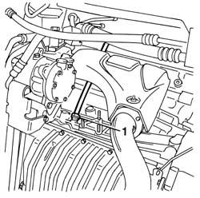
Applies to: engines: 2.5 V6, 3.2 V6; all production periods
Lower the vehicle.
1. Remove the complete engine oil dipstick pipe upwards releasing it from the air conditioning system pressurizing/draining pipes mounting bracket.
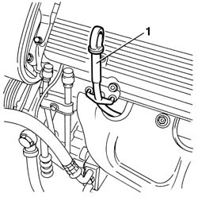
Applies to: engines: 2.5 V6, 3.2 V6; all production periods
Refitting
RemovingFit the complete engine oil dipstick pipe and attach it to the air conditioning system pressurizing/draining pipes mounting bracket.
Raise the car.
Fit the gasket and tighten the nut fixing the engine oil dipstick pipe to the crankcase to the recommended torque.
 | Fastening | Component | Ø | Value (daNm) |
|---|---|---|---|---|
- | Bolt | OIL LEVEL DIPSTICK PIPE | M16 | 2.1 - 2.6 |
Applies to: all engines; all production periods
Removing
RefittingPosition the vehicle on the ramp.
Proceed with the removal 7055B54 under-engine guard - r r .
1. Undo the bolt fixing the exhaust manifold to the mounting bracket on the crankcase.
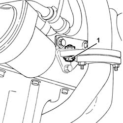
Applies to: all engines; all production periods
1. Undo nuts (1a) and (1b) securing the exhaust manifold to the front exhaust pipe section.
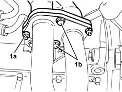
Applies to: all engines; all production periods
1. Undo the nuts (1a) and remove the exhaust manifold heat shield (1b).
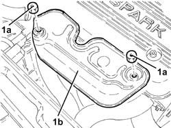
Applies to: all engines; all production periods
Proceed with the removal 1016A40 ignition coil cover on cylinder head- r+r .
1. Undo the nuts (1a) securing the exhaust manifold (1b) to the cylinder head amd move aside as necessary.
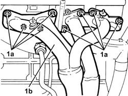
Applies to: all engines; all production periods
1. Withdraw the oil level dipstick.
2. Undo the nut (2a) and remove the engine oil dipstick pipe (2b).
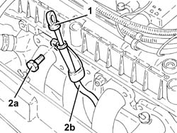
Applies to: all engines; all production periods
Refitting
RemovingPlace the complete engine oil dipstick tube back in its housing and fix it using the bolt.
Place the engine oil dipstick back in its seating.
Place the exhaust manifold back in its housing and fix it tightening the cylinder head nuts to the recommended torque.
| Fastening | Component | Ø | Value (daNm) |
|---|---|---|---|---|
- | Nut | EXHAUST MANIFOLD/S | M8 | (Cylinder head side) 1.7 ÷ 2.1 |
Proceed with the refitting 1016A40 ignition coil cover on cylinder head- r+r .
Place the exhaust manifold heat shield back in its housing and fix it using the nuts.
Tighten the nuts securing the exhaust manifold to the front exhaust pipe section to the specified torque.
| Fastening | Component | Ø | Value (daNm) |
|---|---|---|---|---|
- | Nut | EXHAUST MANIFOLD/S | M8 | (Front. section of exhaust pipe side) 2.3 ÷ 2.8 |
| Fastening | Component | Ø | Value (daNm) |
|---|---|---|---|---|
- | Bolt | EXHAUST MANIFOLD/S | M8 | (Front. section of exhaust pipe side) 2.3 ÷ 2.8 |
Tighten the bolt fixing the exhaust manifold to the mounting bracket on the crankcase.
Proceed with the refitting 7055B54 under-engine guard - r r .
Remove the car from the ramp.
Applies to: engines: 2.0 JTS, 2.0 JTS; all production periods
Removing
RefittingProceed with removal 1016A40 ignition coil cover on cylinder head- r+r .
1. Remove the engine oil dipstick.
2. Undo the bolt (2a) and remove the engine oil dipstick pipe (2b).
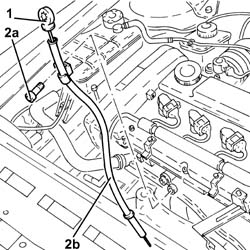
Applies to: engines: 2.0 JTS, 2.0 JTS; all production periods
Refitting
RemovingPlace the complete engine oil dipstick tube back in its housing and fix it using the bolt.
Place the engine oil dipstick back in its seating.
Proceed with refitting 1016A40 ignition coil cover on cylinder head- r+r .
Applies to: engines: 1.9 JTD 8v , 2.4 JTD 10v; all production periods
Removing
RefittingPosition the vehicle on the lift.
Raise the car.
1. Undo the lower bolt for the enigne oil dipstick.
Lower the vehicle.
2. Undo the upper bolt (2a) and remove the engine oil dipstick pipe (2b).
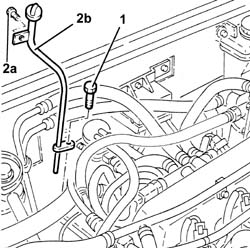
Applies to: engines: 1.9 JTD 8v , 2.4 JTD 10v; all production periods
Refitting
RemovingFit the engine oil dipstick pipe and fix it using the upper bolt.
Raise the car.
Tighten the lower bolt for the engine oil dipstick.
Lower the vehicle.
Remove the vehicle from the ramp.
Applies to: engines: 1.9 JTD 16v; all production periods
Removing
RefittingPosition the vehicle on the ramp.
Proceed with removal 1016A10 sound-proofing cover - r + r .
Proceed with removal 7055B54 under-engine guard - r r .
1. Undo the lower bolt fastening the engine oil dipstick pipe to the crankcase sump.
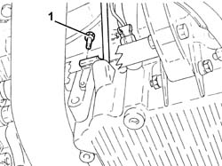
Applies to: engines: 1.9 JTD 16v; all production periods
1. Undo the upper bolt fixing the engine oil dipstick tube to the pressure pump mounting.
2. Remove the tube for the engine oil dipstick releasing it from the fastenings on the electrical wiring.
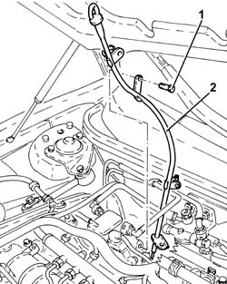
Applies to: engines: 1.9 JTD 16v; all production periods
Refitting
RemovingPlace the tube for the engine oil dipstick back in its housing, and secure it to the electrical wiring using the bands.
Tighten the upper bolt fixing the engine oil dipstick pipe to the pressure pump mounting.
Tighten the lower bolt fixing the engine oil dipstick pipe to the crankcase sump.
Proceed with refitting 7055B54 under-engine guard - r r .
Proceed with refitting 1016A10 sound-proofing cover - r + r .
Remove the car from the ramps.
Applies to: engines: 2.4 JTD 20v; all production periods
Removing
RefittingPosition the vehicle on the ramp.
Proceed with removal 1016A10 sound-proofing cover - r + r .
Proceed with removal 7055B54 under-engine guard - r r .
1. Undo the lower bolt fastening the engine oil dipstick pipe to the crankcase sump.
2. Undo the upper bolt fixing the engine oil dipstick tube to the pressure pump mounting.
3. Remove the tube for the engine oil dipstick releasing it from the fastenings on the electrical wiring.
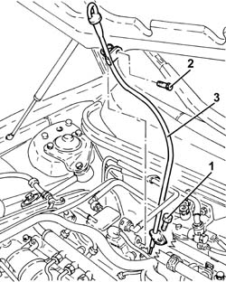
Applies to: engines: 2.4 JTD 20v; all production periods
Refitting
RemovingPlace the tube for the engine oil dipstick back in its housing, and secure it to the electrical wiring using the bands.
Tighten the upper bolt fixing the engine oil dipstick pipe to the pressure pump mounting.
Tighten the lower bolt fixing the engine oil dipstick pipe to the crankcase sump.
Proceed with refitting 7055B54 under-engine guard - r r .
Proceed with refitting 1016A10 sound-proofing cover - r + r .
Remove the car from the ramps.
Topics linked from this page (3)
- 1016A10 sound-proofing cover - r + r
- 1016A40 ignition coil cover on cylinder head- r+r
- 7055B54 under-engine guard - r r
Topics that link to this page (19)
- 1020A20 crank case oil sump - r + r clean seals for sealant application
- 1020D11 front crankshaft oil seal cover-r r and replace seal with timing belt removed-includes cleaning mating surfaces and applying sealant
- 1020D14 front crank shaft oil seal cover - r + r and replace seals for versions with oil pump on crank shaft, timing side
- 1020D26 flywheel side oil seal cover - r+r
- 1020D30 oil seal cover, fly wheel side - r + r and replace seals
- 1028H10 connecting rod and piston set - r r
- 1028H20 piston with connecting rod - r r
- 1028H21 piston with connecting rod - r r
- 1060E10 pressure pump - r r
- 1060E40 supplementary pressure pump - r r
- 1072B10 inlet manifold - r + r and replace seal
- 1084B26 emgine oil intake duct - r r
- 2710A32 intermediate drive shaft bearing support - r + r with intermediate drive shaft removed
- 2710A35 intermediate drive shaft mount - r r
- 4130B20 power steering pump r r
- 4130B32 power steering pump mount - r r
- 4130B34 supply pipe from fluid resevior to power steering pump r r
- 4130B40 outlet pipe from pump to power steering case r r
- 5530A10 alternator - r+r